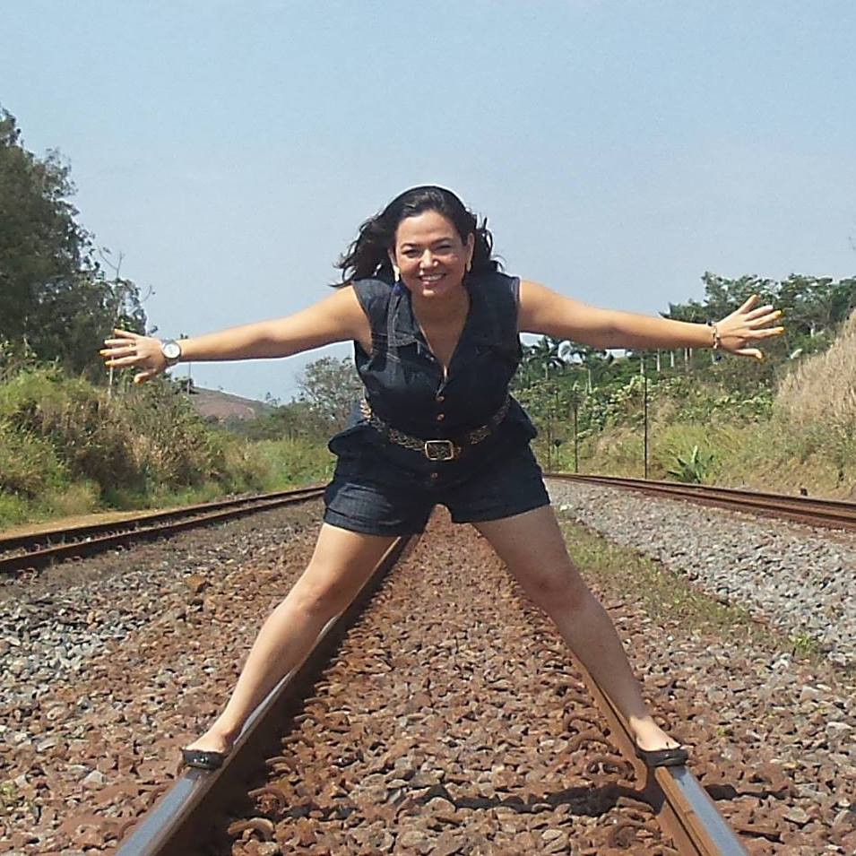

TRILHAS E APRENDIZADOS
Origem
Desde muito cedo brincava com o fato de ser "cariopixabaiana", termo inventado por ser filha de carioca e uma baiana e ter nascido em terras capixabas. Essa mistura de culturas tem ditado muito de minha vida: amo conhecer pessoas e lugares diferentes, lidar com o novo e inusitado, respeitando e tentando entender um pouco de cada um.
Carreira
Por influência do meu avô, Ubirajara de Almeida - in memorian, um advogado brilhante e com certeza a pessoa mais sensível e inteligente que já conheci, cursei Direito... descobri ser uma profissão para fortes e aprendi a admirar quem se dedica diariamente a administrar a justiça.
Construí minha carreira sem amarras tradicionais. Embora tenha me formado em Direito, passado na OAB em seguida, feito especialização, e advogado nos últimos 9 anos, sempre procurei ter hobbies e perseguir sonhos, inclusive um deles acabou se tornando uma segunda profissão, pois atuei como fotógrafa profissional por 2 anos e tive uma experiência de vida ímpar.
Encontrei na fotografia uma maneira singular de traduzir algumas das minhas paixões: pessoas e arte. Amo brincar com a luz e procurei revelar, a cada novo projeto, peculiaridades que refletissem o que há de melhor nas pessoas por mim fotografadas, com a expectativa de que cada um pudesse enxergar que o que o torna único e diferente dos demais é também o que o torna especial.
Além disso, ajudo meu noivo (Cleiton Dias) em uma pequena empresa familiar (Limpe a Seco) e juntos já ganhamos prêmios de reconhecimento pela população linharense (Recall 2017, 2018 e 2019).
Todas essas circunstâncias acabaram me afastando do campo acadêmico.
Reviravoltas
No final de 2018, contudo, o contexto político do país me deixou muito desconfortável e percebi que tinha que fazer algo a respeito!
Voltei a estudar, inicialmente participando de conferências e palestras, online e em Vitória (mesmo morando no interior, procuro ir pelo menos em 3 ou 4 eventos por mês na capital). Durante esse tempo, percebi o quanto a tecnologia realmente pode mudar vidas em todo o mundo, e isso me motivou ainda mais a aprender.
De volta aos estudos
Muitos MOOCs foram iniciados e alguns deles finalizados, porque decidi que precisaria experimentar um pouco de cada área de interesse para descobrir como fazer diferença no mundo e ao mesmo tempo ser feliz.
Investi em especializações na área jurídica, em Direito para Startups (pela Fundação Getúlio Vargas - FGV) e Propriedade Intelectual (promovido pela Organização Mundial da Propriedade Intelectual - OMPI, em parceria com o Instituto Nacional da Propriedade Industrial - INPI-Brasil).
Na área de negócios/gestão, estudei Análise de Dados e Negócios (na Udacity) e iniciei o MBA em gestão de negócios digitais (pela FGV - conveniada MMurad).
Por fim, na área tecnológica, a exploração desse "novo mundo tem sido a mais diversificada possível. Desde fundamentos da Ciência da Computação, línguagens diversas (como Python, HTML, CSS, JS), cursos de Cientista de Dados e Engenharia de Machine Learning (na Udacity), até o tão sonhado ingresso na Future4, que tem se tornado a mais intensa jornada de aprendizado da minha carreira.
Obviamente são muitas áreas de estudo, mas a especialização será direcionada para o que fizer mais sentido com minha visão de negócios.
Ação
Hoje participo de treinamentos para jovens líderes empresariais (Aliança Jovem) e contribuo para o desenvolvimento de um ambiente inovador no estado do Espírito Santo (Vale da Moqueca), auxilio em projetos de tecnologia na área médica (Hacking Health Espírito Santo), sou mentora voluntária de uma das maiores e maios importantes ONGs do Brasil, a Fundação Estudar, e quero contribuir cada vez mais.
Aprendizado
O caminho da aprendizagem, em si, será constante, e mais do que nunca percebi que o que dá sentido à vida é contribuir para toda a sociedade. Comecei na minha cidade, depois do meu estado, quero expandir os impactos em todo o Brasil e quem sabe globalmente.
Tenho dedicado meu tempo à expansão do conhecimento e à tentativa de transformar o mundo atendendo reais necessidades das pessoas. Venho estudando maneiras de causar impacto social através da geração de riqueza individual por meio do EMPREENDEDORISMO, principalmente entre as mulheres.
Meus objetivos são grandes, mas viáveis. Quero aprender e replicar conhecimento, porque acredito que a combinação de ferramentas de educação, empreendedorismo e tecnologia contribuirá para as melhorias que o mundo precisa, e pretendo unir forças com o máximo de pessoas possível nesse mesmo sentido.